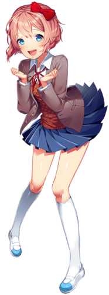

Моника

Моника (англ. Monika) (яп. モニカ — советник) — главный антагонист игры Doki Doki Literature Club!, также она является одним из главных героев и была президентом Литературного Клуба, пока она не была заменена Саёри после того, как была удалена в Акте 3. Во время прохождения игры становится ясно, что она имеет самосознание, вследствие чего она создает ошибки в игре, тем самым ломая игру. Вы не можете писать Монике поэмы вплоть до Акта 3
Внешность
У Моники длинные русые волосы, завязанные в хвост сзади большим белым бантом, а спереди — чёлка и две длинные пряди, свисающие около лица. У неё зелёные, изумрудные глаза; в Акте 3 показываются маленькие точки, которые являются её цветными зрачками, окружающими радужную оболочку.
Она носит обычную школьную форму с серым пиджаком, рубашку с белым воротником и коричневый свитер, украшенный красным бантом. Также она носит тёмно-синюю юбку, черные чулки до бёдер и бело-розовую обувь-увабаки, которая резко контрастирует с чёрными чулками
Саёри
Саёри (англ. Sayori) (яп. 小夜里/さより — деревня) — одна из четырех главных героинь и одна из трех девушек, которой вы можете писать поэмы. Она — друг детства протагониста и вице-президент Литературного Клуба в Акте 1. В Акте 4 она становится президентом Литературного Клуба.
Внешность
Саёри имеет кораллово-розовые волосы, срезанные и слегка завитые на концах, с красным бантом на левой стороне головы. Ее глаза небесно-голубые, и она среднего роста и веса. Она, как и другие члены литературного клуба, носит школьную форму, которая представляет из себя теплый серый пиджак со свитером коричневого цвета и белым воротником под ним и красной лентой, хотя в отличие от других, пиджак Саёри постоянно расстёгнут, а лента повязана криво. Она также носит тёмно-синюю юбку, белые гольфы и белую обувь-увабаки с небесно-голубым кончиком.
Когда протагонист впервые приходит домой к Саёри, она носит розовую футболку с длинными рукавами и синие шорты. Во время её смерти она была в коричнево-белой рубашке с воротником и в красных шортах. Она является вторым самым низким персонажем в игре, ниже её только Нацуки.
Юри
Юри (англ. Yuri) (яп. 百合 — лилия) — одна из четырех главных героинь Doki Doki Literature Club! и участник Литературного Клуба, позже стала вице-президентом в Акте 2 после того, как Саёри была удалена Моникой в Акте 1 и в Акте 4, когда президентом стала Саёри. Она одна из трех девушек, которым вы можете писать поэмы.
Внешность
У Юри длинные фиолетовые волосы и светло-фиолетовые глаза. На обеих сторонах своих волос она носит фиолетовые застёжки рядом с челкой. Большую часть игры она одета в типичную школьную форму, также в бежевый свитер и черные леггинсы во время её романтического пути. Другие персонажи отмечают её зрелость и утонченность, а также исключительную красоту.
Юри самый высокий женский персонаж в игре. Дэн Салвато отметил, что рост Юри на стадии концепта 5'5 (165 см.). Она также самый физически развитый персонаж, что можно добавить к её чертам зрелости и к её комплексам.
Нацуки
Нацуки (англ. Natsuki) (яп. なつき, ナツキ — лето, редкая) — одна из четырех главных героинь в игре. Член Литературного Клуба и одна из трех персонажей, которым вы можете писать стихи
Внешность
У Нацуки розоватые волосы и такого же цвета глаза. Она носит оцепленную заклепку для волос на правой стороне передней части её волос и две красные ленты, которые формируют два маленьких хвостика. Остальные волосы - короткие. Также у неё есть маленькая чёлка.
Она одета в школьную форму, как и большинство персонажей в игре. При выборе её романтического пути на третий день она будет одета в тёмно-коричневую юбку с чёрной отделкой, белую футболку, украшенную светло-розовым силуэтом мордочки кота и с обрезами по краям рукавов. Под футболкой можно увидеть два черных ремешка от бюстгальтера.
Нацуки - самый низкий персонаж в Doki Doki Literature Club!. Протагонист предполагает, что это из-за того, что она младше всех остальных членов клуба, однако Моника объясняет, что это результат недоедания.